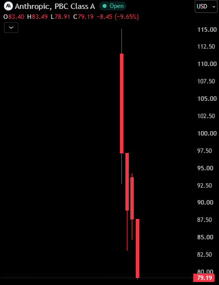
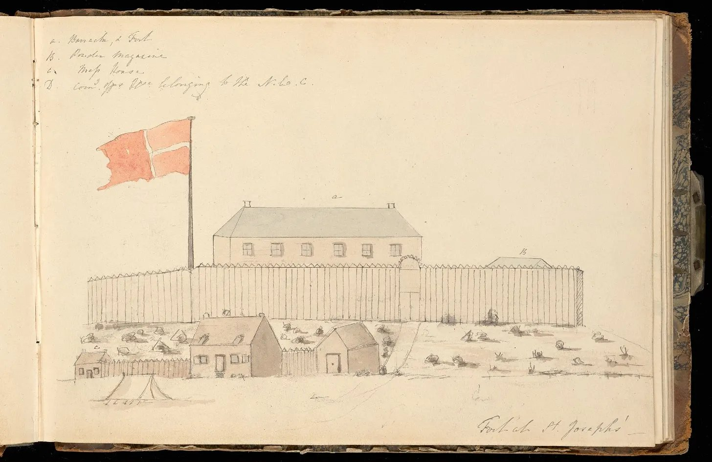
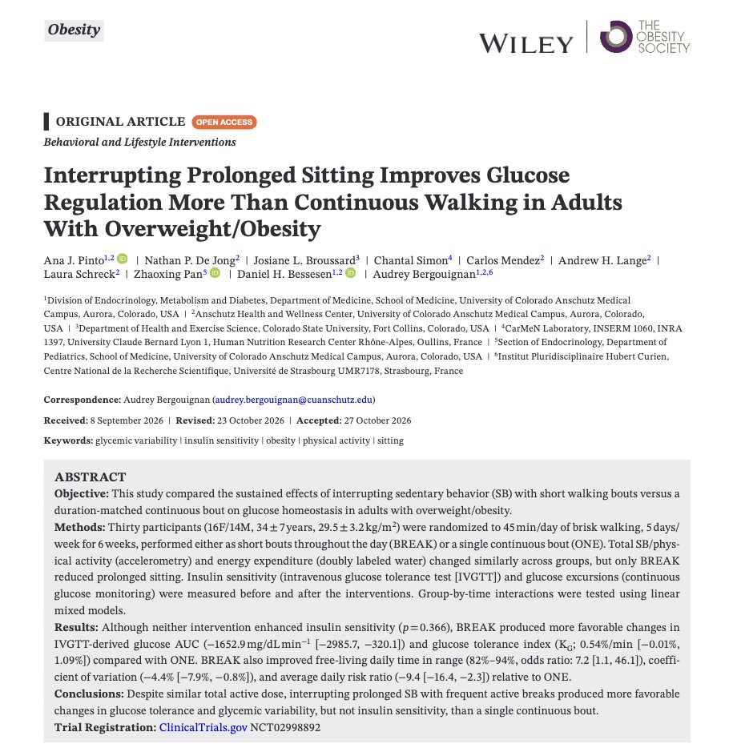

Anthropic scende sotto il prezzo di IPO, i dazi affondano i chip, l'AI trova l'esponente 9/4 e l'autore di un album del 1808. E cinque minuti di camminata battono quarantacinque
Brief di mercoledì 25 novembre 2026 · lista X «Best» · 193 post da 51 account, dalle 13:30 del 24/11 alle 13:08 del 25/11 (ora di Roma)
📉 Ieri il re tornava sul trono. Oggi il conto lo paga il principe ereditario: Anthropic, quotata da meno di una settimana, scende sotto gli 80 dollari, il 5% sotto il prezzo di IPO e il 31% sotto il massimo della settimana scorsa. Nel frattempo le stesse macchine che il mercato svaluta dimostrano teoremi, attribuiscono disegni anonimi e progettano proteine. Due velocità che non si parlano.
Morning Brew la mette così: Anthropic è ufficialmente più economica di GTA VI, uscito lo stesso giorno della quotazione. E per ridimensionare l'entusiasmo affianca due numeri: ricavi di Anthropic 81 miliardi di dollari, ricavi di Walmart 736. Bill Gurley, che sulle IPO ci ha costruito una carriera, non è sorpreso: nessuno faceva a gara per possedere Anthropic, volevano il regalo del primo giorno, i soldi facili del rialzo all'apertura. E ricorda che nessuno si ricorderà se un titolo è sceso sotto il prezzo di collocamento: conta come va nel lungo periodo. Anthony Pompliano è più spiccio: ora potete comprare Anthropic sotto il prezzo di IPO. Grazie per aver giocato. Una domanda che ci facevamo già anni fa (🧩 ff.88.1 Una bolla finanziaria?). Curioso che il crollo arrivi dopo la settimana in cui un ricercatore di Anthropic annunciava Riemann (🔢 ff.158.1 Numeri primi e come cercarli).

Il vento gira in fretta. Lunedì l'S&P 500 aveva battuto la sua versione equipesata di 2,1 punti percentuali, il distacco giornaliero più ampio almeno dal 1990: un rialzo fatto quasi tutto da Nvidia e pochi altri. Martedì il Wall Street Journal scrive che Trump prepara nuovi dazi «a tappeto» su Cina, Unione Europea e altre 14 economie, con Europa, Giappone e Corea del Sud al 15% o meno. I future sul Nasdaq 100 perdono il 2,5%. AMD cede oltre il 12% e scende sotto i 400 dollari per la prima volta da maggio, a −30% da quando Hunterbrook Media ha ipotizzato vendite illegali di chip alla Cina. Nella notte la svendita passa in Asia: SoftBank perde più del 10%, e stamattina anche Nvidia scende di oltre il 5% nel pre-mercato. Fundstrat registra chi teme che il 2026 stia ricalcando il 2018, con le borse in calo verso fine anno.
La saga Huang continua dalla Casa Bianca. Trump si dice pronto a concedergli la grazia «se necessario» e gli consiglia di non appellarsi al Quinto emendamento all'audizione al Congresso della prossima settimana. Poi rilancia: lo Stato potrebbe prendere una quota di Nvidia. «Probabilmente non è troppo tardi». Nassim Taleb festeggia il fallimento del «lavoro di demolizione» del New York Times: per lui i social funzionano meglio del giornalismo. Palmer Luckey risponde a chi sostiene che Huang starebbe meglio con un mucchio di soldi: nessuna teoria della mente su cosa motiva le persone. E ci ripensa con un concetto delizioso, la «Breakfast Question»: chiedi «come ti sentiresti se stamattina non avessi fatto colazione?» e ti rispondono «ma io ho fatto colazione». Qualche anno fa ci stupivamo che Nvidia valesse più della Svizzera (🍫 ff.139.1 Svizzero? No, NVIDIA); ora ci si chiede se valga la pena nazionalizzarla.
Sul fronte della conoscenza, la giornata è da ricordare. Sébastien Bubeck annuncia, rilanciato da Greg Brockman, che l'esponente della moltiplicazione di matrici è esattamente 9/4: «il tipo di risultato che non avrei mai pensato di vedere nella mia vita». Brockman ci aggiunge che l'AI ci aiuta a capire i limiti fondamentali del calcolo. Peter Diamandis torna sulla dimostrazione di Riemann da 17 milioni di righe, scritta con Claude in sei settimane, e a un ragazzo di 16 anni con un abbonamento a Claude, la matematica d'élite sembra ormai un «tutti contro tutti». La parte che preferisco però è umanistica: lo storico Mark Humphries ha chiesto a GPT-6.2 Astra di guardare un album di schizzi anonimo del 1808 conservato a Yale, e il modello ne ha trovato l'autore, un oscuro aristocratico francese. Stesso schema in biologia, dove GPT-6 progetta nuove proteine senza alcun modello specifico, e Mollick riassume: «bitter lesson», ovunque, i modelli generalisti battono quelli specialistici. Persino Taleb ha fatto rileggere a Claude un suo paper del 2020: errori minori, trovati meglio di un revisore. Cosa dovrebbe dichiarare? Microscopi concettuali, li avevamo chiamati (🔭 ff.158.2 Microscopi “concettuali”).

x.com/gdb/status/2125418102049628201
Come si misura un'intelligenza? OpenAI propone «Perplexity and Intelligence»: la perplessità, cioè quanto un modello è incerto sul prossimo token, come metro comune. Diamandis fa i conti: GPT-3.5 era a circa 0,99 di log-perplessità sul codice, e la finestra «trasformativa» sta tra 0,68 e 0,7. ln(2) = 0,693: un modello lì è incerto come il lancio di una moneta. Jason Wei osserva che il post non rilascia un dataset per la comunità e propone un'alternativa. Diamandis aggiunge il contesto: domenica il capo scienziato di OpenAI ha definito ciò che costruisce «una mente aliena» e ha chiesto agli altri laboratori un limite di velocità. Yuval Harari vede il paradosso: la Borsa che scommette sull'AI dice «creeremo dèi e saranno nostri schiavi», convinta di restare al comando (🕊️ ff.106.3 Nexus e Harari).
Mollick riporta un racconto che sente da diverse grandi aziende, dalla manifattura ai servizi finanziari: squadre sparse di 2-3 persone che con l'AI fanno il lavoro di dozzine, e scatenano lotte di potere nel management. Non c'è un manuale, e quelle squadre attraversano i confini tra marketing, legale, ingegneria e vendite, minacciando strutture e regole. C'è chi legge segnali più cupi: Google e Microsoft stanno offrendo buonuscite a circa 100.000 dipendenti mentre guadagnano più che mai. Anche la musica pone dei limiti: Tidal vieta la musica generata dall'AI dal mese prossimo, primo servizio di streaming a farlo. I numeri spiegano perché: il 43% dei brani caricati negli ultimi 90 giorni era AI, il 96% di questi non ha mai avuto un ascolto, 29 milioni di tracce verranno cancellate e ne saranno respinte 80-85.000 al giorno. Destreggiarsi tra più lavori, scrivevamo (🤹♀️ ff.157.3 Giocolare tra 3 lavori?); qui è un lavoro solo che ne assorbe dieci.
x.com/emollick/status/2125267894644916669
Per chi corre e pedala, la notizia più utile del giorno viene da Rhonda Patrick: pause ripetute di 5 minuti di camminata migliorano la tolleranza al glucosio più di una camminata continua di 45 minuti, a parità di calorie bruciate. Lo studio, uscito su Obesity, ha seguito 30 adulti in sovrappeso per sei settimane, con 45 minuti di camminata veloce al giorno, cinque giorni a settimana: spezzettati vincono anche sul tempo trascorso tra 70 e 140 mg/dL. La sensibilità insulinica, invece, non cambia. Picchi glicemici e come evitarli, ancora (🎢 ff.145.3 Picchi glicemici (e come evitarli)). Bryan Johnson si riscalda 20 minuti prima di ogni allenamento duro: secondo i dati che cita, gli infortuni muscoloscheletrici calano del 30-38%, quelli gravi fino al 50%, la potenza sale del 2-5%, e lo stretching statico passivo da solo non previene nulla. Patrick aggiunge che 3 o più tazze di caffè al giorno, senza zucchero, si associano a un rischio più basso di Alzheimer e Parkinson (☕ ff.92.3 Tè o caffè? Benzina del microbioma). E Siim Land segnala uno studio su Nature Aging con 72 adulti: con l'età le onde di liquido cerebrospinale che puliscono il cervello durante il sonno si indeboliscono, anche per il calo delle onde lente nel sonno NREM.
